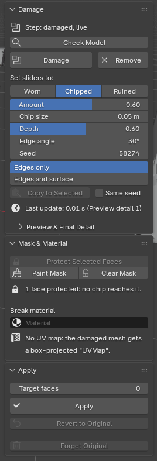

Knapwell quick start
Install Knapwell and make your first damage. The full manual, README.md, is inside the download. Back to the Knapwell product page.
Install (Blender 4.5 LTS to 5.2 LTS)
- Download the Knapwell zip (
knapwell-1.4.5.zip) from the link in your checkout email. Install the zip itself; do not unzip it. - In Blender, open Edit > Preferences > Get Extensions. If Blender asks about internet access, Continue Offline is fine: Knapwell needs none.
- Open the menu at the top right (the rightmost ⌄), choose Install from Disk... and pick the zip.
- Press N in the 3D Viewport and open the Knapwell tab. The main buttons are also in Object > Knapwell, so F3 search finds them.
To update, install the newer zip the same way. Knapwell was called Spallwork until version 1.4.0: if you had Spallwork, uninstall it first.
First damage
- Check Model (recommended for an imported model). Select the meshes and click it. The Check Model sub-panel, below the sliders, gives one line per object, with the fix under any problem: Weld Seams for a mesh split at UV seams, Fill Holes for holes, Add Solidify for a plane, Fix Normals, Remove Zero-Area Faces, and Convert to Mesh for a text or curve object. Objects that need nothing fold into one line ("6 ready"). Click a line to see every finding for that object.
- Click Damage. Each mesh gets a "Knapwell" modifier; its own mesh is not changed until Apply. Cameras and lights in the selection are left alone.
- Under Set sliders to:, pick Worn, Chipped or Ruined, then adjust Amount, Chip size (in metres, whatever the object's scale), Depth, Edge angle, Seed and Mode. With several objects selected, a slider change goes to all of them; Seed changes only the active one.
- On thin parts, such as real-size bricks, chips are capped to fit each part. The line under the sliders says so ("Chips capped at 0.019 m"); its Use button writes that size into Chip size. The chips do not change and the look stays set; the slider just shows their real size.
- Preview & Final Detail (closed by default): 1 to 4, higher is finer chips and slower. The viewport uses Preview detail; F12 renders and Apply use Final detail.


Protect faces, pick a break material
These are in the Mask & Material section, which starts folded so Apply fits on a small screen: click its header once to open it (Blender keeps it open).
- Protect Selected Faces: in Edit Mode, select faces (a doorway, a carving) and click it. No chip reaches those faces or the edges around them, so protecting a step's tread keeps its nosing clean too; the faces further away are still chipped.
- Paint Mask: Weight Paint on the vertex group "Knapwell Mask". A face is protected when all its corners are painted. On an object whose damage is applied, it asks to Revert to Original first, so the mask is painted on the original mesh and is not lost.
- Clear Mask removes both.
- Break material: the faces the damage creates get it; every other face keeps its own material and UVs.
Apply and Revert
- Target faces (0 = off): for game assets, Apply reduces the result to about this many faces, keeping every part closed. Twice the model's own face count gives a light scatter of chips; four times gives chips along most edges.
- Apply turns the damage into ordinary mesh data with outward normals, ready to export.
- Revert to Original brings back the exact mesh from before Apply, even after you save, close and reopen the file, until you choose Forget Original. After Apply the sliders are greyed: Revert to Original to edit them again.
- Forget Original asks first, then deletes the stored copy.
Every button reports what it did in one short line in the status bar; the Info editor keeps the details for each object.
Limits in brief
Closed meshes only (Check Model fixes most imports). Loose parts that touch each other give an STL that is not watertight where they touch; leave a 0.2 mm gap for a print. No cracks, fracture, rebar or debris. Tested on the official Linux builds of Blender 4.5 LTS to 5.2 LTS; Windows and macOS not yet tested. The full list is on the product page.
Privacy
Knapwell makes no network calls. It reads and writes only the open .blend file, and it collects nothing.
Support
Email support@ochrestack.com with your Blender version, your operating system and, if you can, the .blend file or a screenshot of the Knapwell tab.